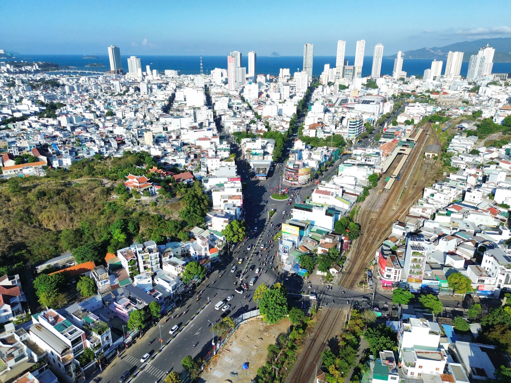
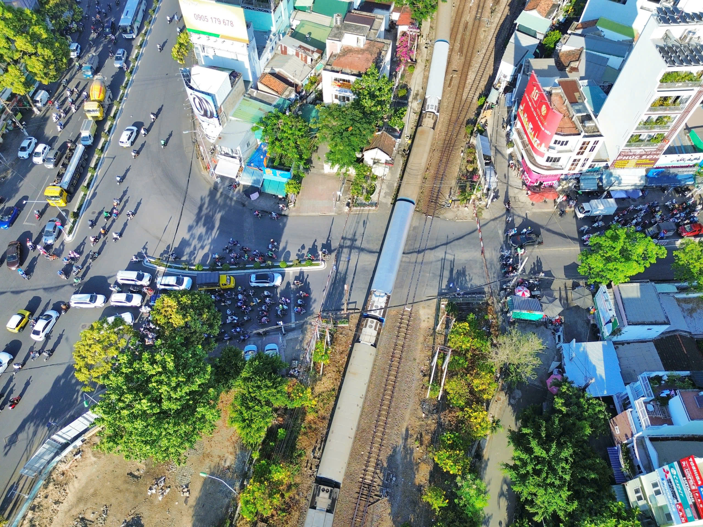
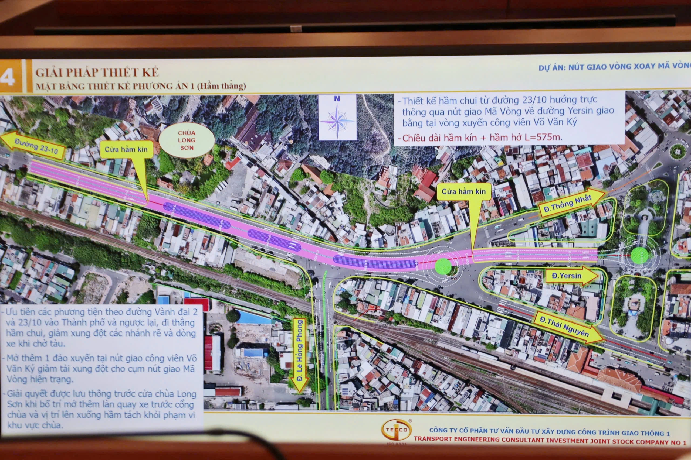
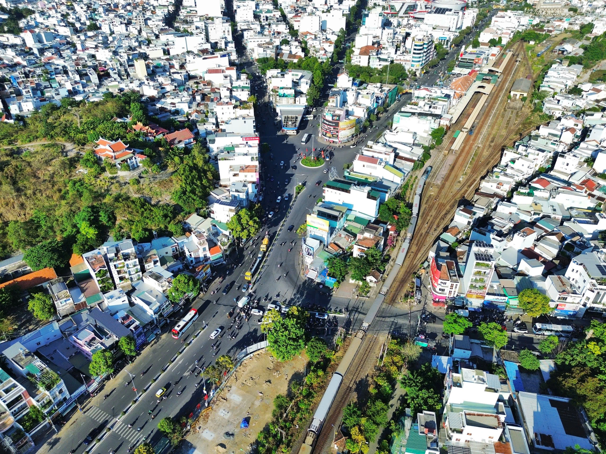

(Thanhnien) - Nút giao nút giao Mả Vòng lớn nhất nội đô Nha Trang với lưu lượng gần 46.000 lượt xe mỗi ngày sẽ được giải quyết triệt để bằng phương án xây hầm chui sau nhiều thập kỷ chờ đợi.
Ngày 7.5, tại cuộc họp do ông Lê Huyền (Phó chủ tịch UBND tỉnh Khánh Hòa) chủ trì, lãnh đạo tỉnh Khánh Hòa cơ bản thống nhất lựa chọn phương án xây dựng hầm chui tại nút giao Mả Vòng (thuộc hai phường: Nha Trang và Tây Nha Trang), với tổng mức đầu tư gần 461 tỉ đồng.
Nút giao Mả Vòng là điểm giao cắt của 5 trục đường huyết mạch gồm đường 23 Tháng 10, Thái Nguyên, Lê Hồng Phong, Yersin và Thống Nhất. Lưu lượng phương tiện từ cửa ngõ phía tây đổ về đạt ngưỡng 44.000 - 46.000 lượt xe/ngày đêm, trong đó xe máy chiếm đến 90%. Tình trạng ùn tắc càng trở nên nghiêm trọng mỗi khi tàu lửa băng qua đường Lê Hồng Phong, khiến toàn bộ nút giao bị tê liệt dù cơ quan chức năng đã nhiều lần phân luồng.

Nút giao Mả Vòng là điểm giao cắt của 5 trục đường huyết mạch thuộc 2 phường: Nha Trang và Tây Nha Trang
Tại cuộc họp, Ban Quản lý dự án phát triển tỉnh Khánh Hòa đưa ra 3 phương án đầu tư, đồng thời trình thêm phương án 4 do UBND thành phố Nha Trang cũ đề xuất để so sánh, trước khi kiến nghị lựa chọn phương án 1. Theo đó, phương án hầm thẳng hướng 23 Tháng 10 đi Yersin được chọn vì tiết kiệm nhất về chi phí xây dựng và giải phóng mặt bằng.
Tổng mức đầu tư theo phương án này là gần 461 tỉ đồng, thấp hơn đáng kể so với phương án hầm chữ Y khai thác một chiều (502 tỉ đồng) và phương án cầu vượt vòng xoay trên cao (826 tỉ đồng). Chi phí giải phóng mặt bằng chỉ ở mức 75 tỉ đồng với 7 hộ bị ảnh hưởng trực tiếp, diện tích nhà dân bị tác động khoảng 485 m2.

Tại nút giao Mả Vòng, tình trạng ùn tắc ngày càng trở nên nghiêm trọng mỗi khi tàu lửa băng qua đường Lê Hồng Phong
Hệ thống hầm có tổng chiều dài 575 m, kết hợp giữa các đoạn hầm kín và hầm hở, đi theo hướng trục thông từ đường 23 Tháng 10 qua nút giao Mả Vòng về đường Yersin, kết nối tại vòng xuyến công viên Võ Văn Ký. Mặt cắt ngang rộng 30 m, bố trí 2 làn xe cơ giới trong hầm và các làn xe hỗn hợp cùng vỉa hè trên mặt đất.
Để xử lý lo ngại về ngập úng, đơn vị tư vấn đề xuất lắp đặt hệ thống bơm cưỡng bức công suất lớn. Phương án này cũng mở thêm một đảo xuyến tại nút giao công viên Võ Văn Ký để giảm tải cho cụm nút giao Mả Vòng hiện trạng.

Phương án hầm chui được đầu tư gần 461 tỉ đồng hứa hẹn xử lý điểm nghẽn giao thông tại Nha Trang
Một điểm nhấn quan trọng tại cuộc họp là làm rõ lộ trình quy hoạch đường sắt. Theo Quyết định 259/QĐ-TTg của Thủ tướng Chính phủ phê duyệt tháng 3.2024, ga Nha Trang mới sẽ được xây dựng tại khu vực Vĩnh Trung, và sau năm 2030, chức năng ga Nha Trang hiện hữu sẽ được chuyển đổi.
Ông Lê Huyền, Phó chủ tịch Khánh Hòa, khẳng định: "Dù có dời ga hay không thì nút giao Mả Vòng vẫn phải làm ngay. Đây không phải là giải pháp tình thế mà là hạ tầng chiến lược, ngay cả khi sau này không còn đường sắt chạy qua thì hầm chui vẫn đóng vai trò mạch máu điều tiết giao thông cho địa phương".

Ga Nha Trang (bên phải) dự kiến sẽ được di dời trong tương lai
Sở Xây dựng Khánh Hòa được giao phối hợp với các địa phương rà soát, thực hiện điều chỉnh quy hoạch phân khu, trong đó nâng lộ giới đoạn kết nối từ 20 m lên 23 m, báo cáo UBND tỉnh trước ngày 20.5. Ban Quản lý dự án phát triển tỉnh được giao tiếp thu các ý kiến đóng góp và hoàn thiện hồ sơ báo cáo đề xuất chủ trương đầu tư. Dự án dự kiến triển khai trong giai đoạn 2026 - 2030.
BÌNH LUẬN